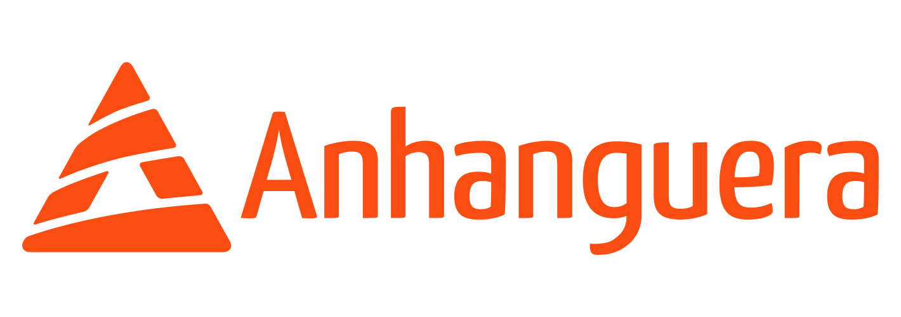

HACKATHON

O Hackathon da Faculdade Anhanguera - Osasco tem como objetivo promover inovação, criatividade, trabalho em equipe e o desenvolvimento de soluções tecnológicas para problemas reais da sociedade e do mercado.
O Hackathon é uma intensa maratona de inovação, tecnologia e colaboração. O termo vem da união das palavras Hack (programar e criar soluções com inteligência) e Marathon (maratona).
Diferente de um hackathon tradicional de 24 horas ininterruptas, a nossa maratona foi planejada em etapas e turnos estratégicos, garantindo que você e sua equipe possam programar, aprender, descansar e dar o seu melhor em cada fase do desafio, sem precisar passar a noite em claro!
Durante o evento, alunos dos cursos de Tecnologia da Informação se reúnem em equipes para:
💡 Idealizar: Desenvolver ideias criativas e viáveis para problemas reais.
💻 Codificar: Criar softwares, aplicativos e protótipos na prática.
🤝 Colaborar: Trabalhar em equipe, compartilhar conhecimentos e aprender com mentores experientes.
🏆 Apresentar (Pitch): Defender a solução criada diante de uma banca avaliadora.
É a oportunidade perfeita para aplicar na prática tudo o que você aprende na sala de aula, construir seu portfólio, expandir sua rede de contatos (networking) e competir por prêmios incríveis!
Organização
Abertura Oficial
Início dos Desafios
Desenvolvimento das Soluções
Desenvolvimento das Soluções
Premiação das Soluções
As premiações serão divulgadas em breve. Monte sua equipe e prepare-se para competir.